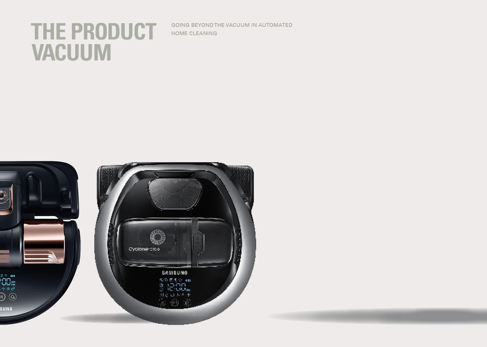
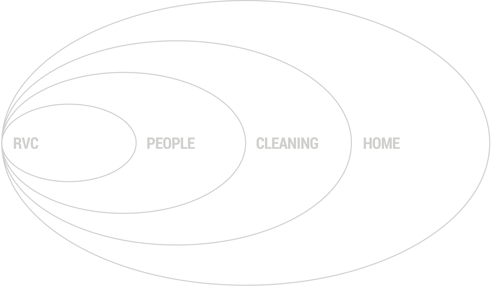
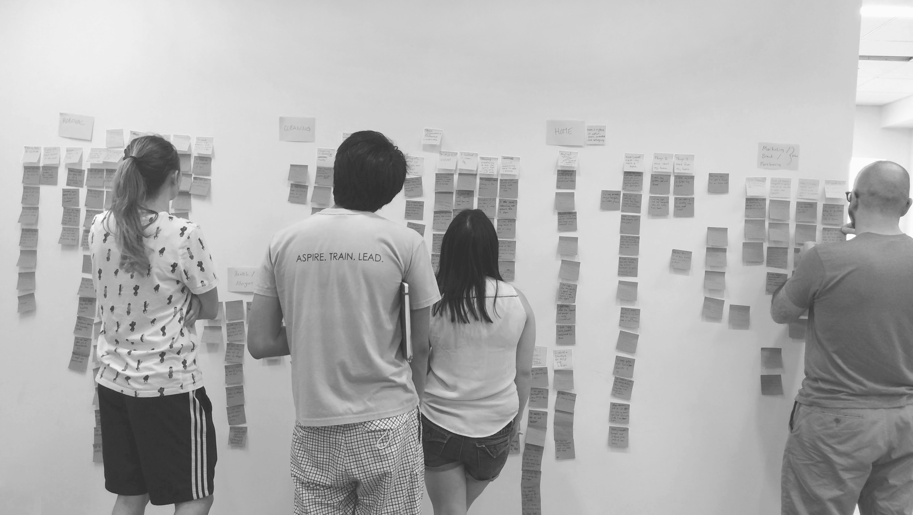
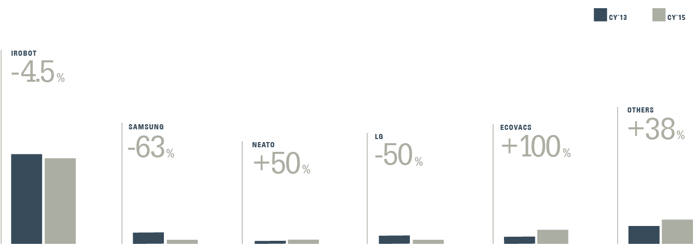
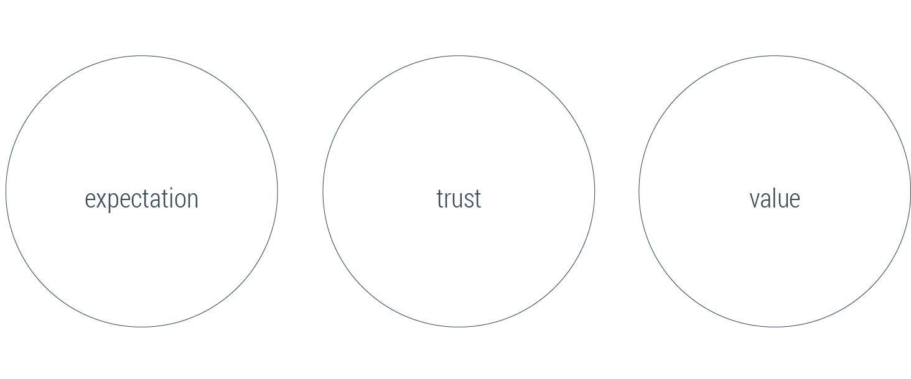

design outcome
Since iRobot's Roomba launched in 2002, the product has become synonymous with the robot vacuum cleaner category. While this continues today, an influx of new brands compete aggressively on cost. Home.io is a project which differentiates Samsung in this current landscape. We sought to improve the current Samsung POWERbot product by appropriately setting expectations, building trust, and ultimately creating value for consumers. In the first phase of this project, we conducted desk and field research accumulating to a report containing insights for design directions. We are currently creating prototypes and user testings, which will lead to a concept video and client pitch in August.
design process
Research Framework
As we delved into the design space, we realized the presence of several unique, but deeply intertwined layers at play. First, the RVC and the relationship people form with it. And from there, how people relate to and approach the task of cleaning—both with and without the assistance of robotics. And lastly, the emotionally complex value homes provide and how that value is affected by cleanliness. We captured these layers in a framework below as a basis for research.
Taking a Deep Dive
We used a mixture of secondary and field research including desk research, expert interviews, surveys, cultural probes, and diary studies. Having gathered a huge amount of data, we utilized affinity diagrams to synthesize our research findings.
 Insight one
Consumers Have High
Expectations That Go Unmet
Before ever encountering a robot vacuum cleaner, consumer expectations are heightened by pop culture mainstays like Rosie from “The Jetsons” or R2-D2 from “Star Wars”. This is further accentuated by product promises of superior features and performance. For those who decided to invest, their expectations are quickly shattered when what they find, is a robot that behaves haphazardly, bumps into furnitures, and demands significant effort to make it work.
Insight II
Consumers Do Not Trust Their
Robot Vacuums
Among the 14 participants we interviewed, a majority expressed distrust for letting the robot vacuum work while they are away from home. One diary study participant commented: "it's mildly destructive and each time it proves itself unreliable I find it less and less trustworthy." The relationship is problematic, because if people are unable to trust their robot vacuum, they are less likely to use it, and ultimately, the product's value is diminished.
Insight III
Cleaning Restores the Value
Homes Provide
As we investigated the concept of a home through qualitative research, we were intrigued by the complexity of meaning the home embodies. For some, it represents care, for others, it represents comfort and peace. What is universal, is the special place the home occupies, and cleaning is a way to access the home's value by restoring it to an ideal state.
More Features Will Not Sell
In iRobot's 2016 Q4 SEC Earnings Report, we found that new market entrants have shrunk Samsung’s RVC market share in North America by a 63 percent decrease. During this same period, Samsung’s RVCs were improving significantly in terms of functionality. This supported the conclusion that more features will not sell more RVCs.
Opportunities for Design
A product vacuum is being created as RVC development focuses on incremental feature additions without addressing the deeper values the product can provide. We believe the way to differentiate Samsung's robot vacuum offering is to set correct expectations, build trust, and create value.
Prototyping (WIP)
We started to generate a variety of ideas using storyboards and speed dates. From here, we mapped out the current user experience (we divided them into chunks called "experience vignettes"). We also envisioned an ideal user experience using customer journey maps. Visually, this gave us a clear idea of how our concepts and modalities work together in the ideal experience. Based on this work, our current effort is focused on prototyping using LED lights, sound, and an app prototype. Stay tuned as we wrap up the project in August!
You Might Also Like
Parkhelper | Mobile App Design
Designing for Value Co-production
Emergency housing | responsive web design
© 2016 made by angel shi yao Yu